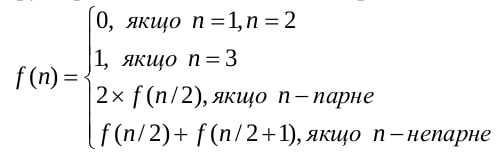
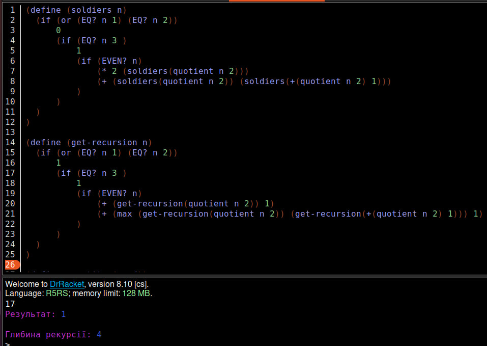
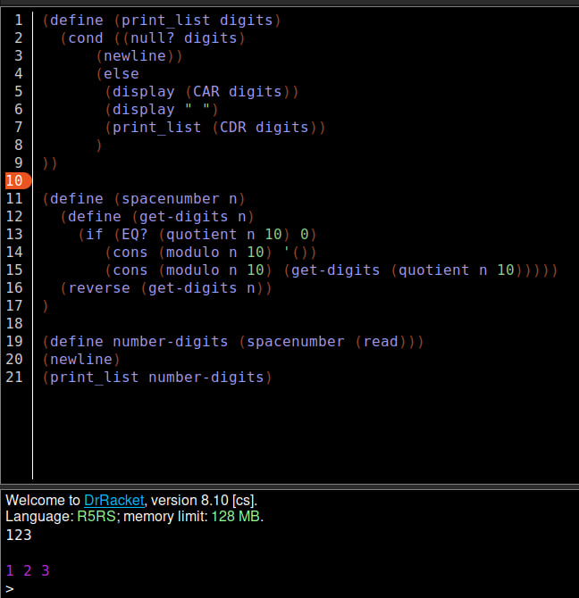

Лабораторна робота 1
Мета роботи
Сформувати декларативне мислення в галузі програмування завдяки використанню чистих функцій, рекурсій замість циклів, запобіганню даних, що змінюються. Опанувати застосування рекурсивних функцій для обчислювальних процесів.
Вибір мови програмування та IDE
Для виконання даної лабораторної роботи було використано мову функціонального програмування Scheme та IDE DrRacket. Мова Scheme надає великий набір числових типів і операцій з ними, має неявні типи даних та статичну область видимості. DrRacket дозволяє програмувати на великій кількості мов функціонального програмування та має зручний інтерфейс.
Завдання 1
Умова завдання
З n солдатів, вишикуваних в шеренгу, потрібно відібрати кількох в розвідку. Для здійснення цього виконується наступна операція: якщо солдат в шерензі більше ніж 3, то видаляються всі солдати, які стоять на парних позиціях, або всі солдати, які стоять на непарних позиціях. Ця процедура повторюється до тих пір, поки в шерензі залишиться 3 або менше солдатів. Їх і відсилають в розвідку. Обчислити кількість способів, якими можуть бути сформовані групи розвідників рівно з трьох осіб. Визначити глибину рекурсії. Кількість солдатів n вводиться з клавіатури. Рекурентне співвідношення для обчислення кількості способів f(n), якими можна сформувати групи розвідників з n осіб в шерензі, таке:
Код програми:
(define (soldiers n)
(if (or (EQ? n 1) (EQ? n 2))
0
(if (EQ? n 3 )
1
(if (EVEN? n)
(* 2 (soldiers(quotient n 2)))
(+ (soldiers(quotient n 2)) (soldiers(+(quotient n 2) 1)))
)
)
)
)
(define (get-recursion n)
(if (or (EQ? n 1) (EQ? n 2))
1
(if (EQ? n 3 )
1
(if (EVEN? n)
(+ (get-recursion(quotient n 2)) 1)
(+ (max (get-recursion(quotient n 2)) (get-recursion(+(quotient n 2) 1))) 1)
)
)
)
)
(define quantity (read))
(display "Результат: ")
(soldiers quantity)
(newline)
(display "Глибина рекурсії: ")
(get-recursion quantity)
Результат роботи програми
Достовірність результату:
Завдання 2
Умова завдання
Увести з клавіатури натуральне число n. Вивести всі його цифри по одній в прямому порядку, розділяючи їх пробілами або новими рядками. При розв'язанні цього дозволена тільки рекурсія і цілочислова арифметика. Контрольний тест: введено число 123, отриманий результат: 1 2 3.
Код програми:
(define (print_list digits)
(cond ((null? digits)
(newline))
(else
(display (CAR digits))
(display " ")
(print_list (CDR digits))
)
))
(define (spacenumber n)
(define (get-digits n)
(if (EQ? (quotient n 10) 0)
(cons (modulo n 10) '())
(cons (modulo n 10) (get-digits (quotient n 10)))))
(reverse (get-digits n))
)
(define number-digits (spacenumber (read)))
(newline)
(print_list number-digits)
Результат роботи програми
Достовірність результату:
Висновок
В ході виконання даної лабораторної роботи було проведено роботу з рекурсивними функція у парадигмі функціоального програмування, також було виконано операції над різними типами даних у мові Scheme. В результаті всі написані функції виконувалися без помилок та видавали правильний результат.